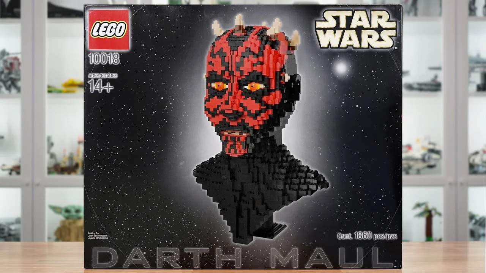
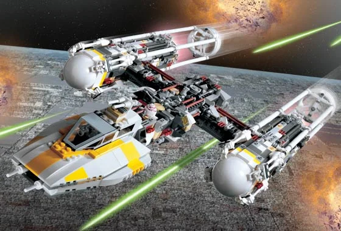
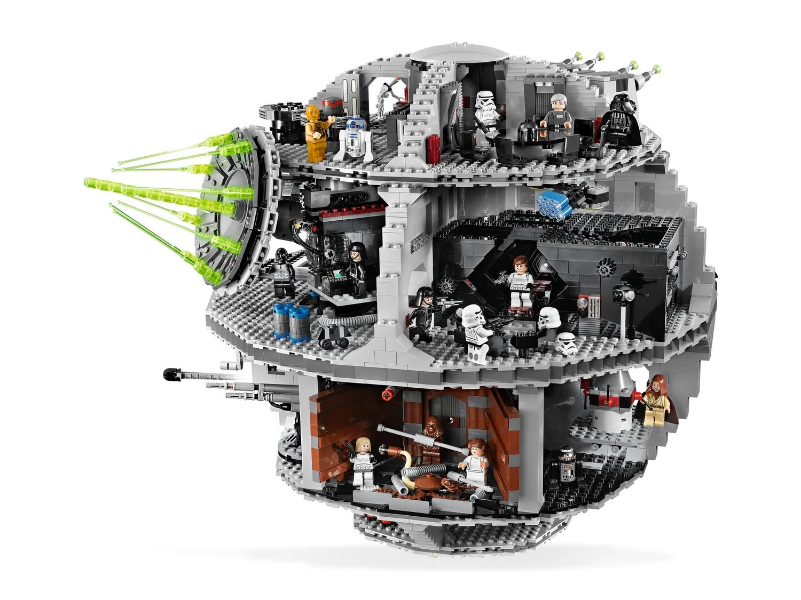
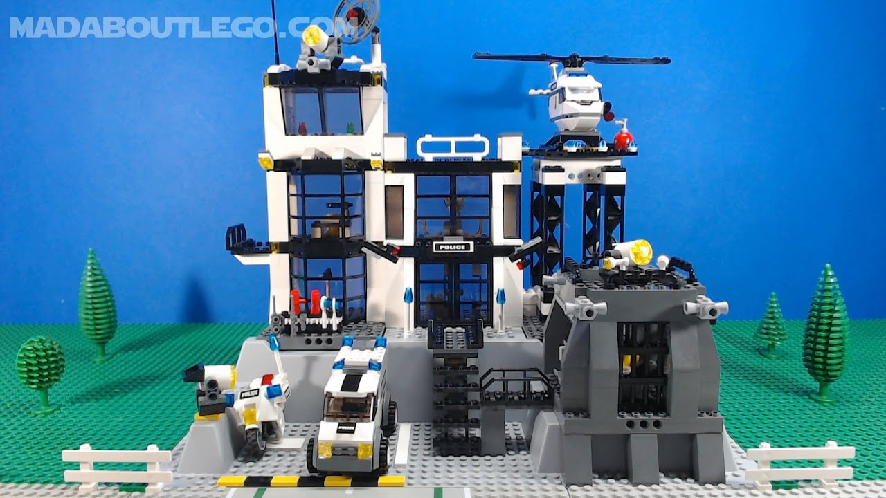
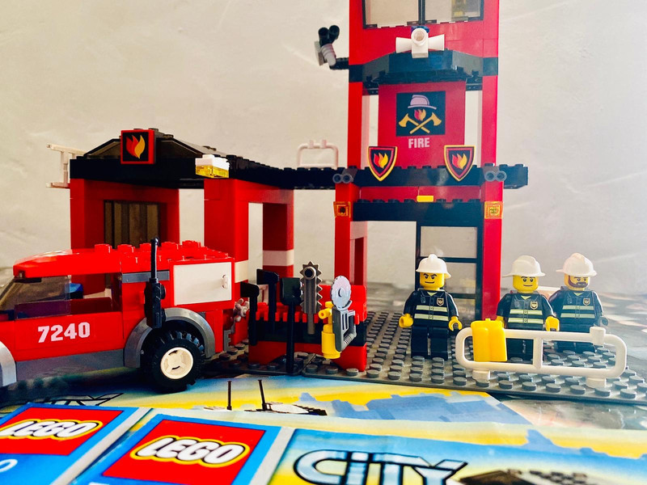

La empresa o marca de Lego fue fundada el 10 de agosto de 1932 por Ole Kirk Christiansen, un carpintero de Dinamarca.
Si bien al principio se fundo para vender articulos de madera, desde 1949 está especializada en juguetes de plástico.
Se dice que el nombre Lego deriva de las palabras danesas «leg godt», que significan «jugar bien». En 2015, la empresa, que mantiene su sede social en Billund, se convirtió en la compañía juguetera con mayor volumen de negocio en el mundo gracias a ventas de 2100 millones de dólares estadounidenses
Curiosidades sobre lego
Aqui también te vamos a contar datos curiosos sobre la franquicia LEGO
Cambio de dirección del negocio
En los años 90, LEGO estuvo al borde de la quiebra debido a la competencia de videojuegos y otras formas de entretenimiento. Sin embargo, se reinventaron con productos innovadores, como LEGO Mindstorms (robots de construcción) y series de películas basadas en sus sets.
Lego y su record guinness
En 2015, se rompió el récord Guinness con una estructura de LEGO de 35 metros de largo, construida en una ciudad de Dinamarca, que representaba una serpiente de más de 200.000 piezas.
Lego como terapia
En algunos estudios de terapia ocupacional, se utilizan bloques LEGO para mejorar la coordinación y habilidades motoras en personas con autismo, ya que la actividad de construir es muy beneficiosa para mejorar la concentración y la destreza
Sagas de lego a buscar
Lego Star Wars
La saga de lego Star Wars es de las más exitosas de LEGO, por lo que han ido sacando a lo largo de los años miles de recreaciones a escenas, personajes, estructuras, eventos, etc.. que aparecen en sus películas y series.
Las figuras de LEGO son una colección de sets y minifiguras que combinan el icónico diseño de LEGO con los personajes y naves del universo de Star Wars. Desde el lanzamiento inicial de la línea en 1999, LEGO ha creado una gran variedad de productos que permiten a los fans construir modelos detallados de naves, vehículos, escenas y personajes de las películas de Star Wars.
Aqui os mostrare una las figuras más iconicas de la decada de los 2000:
10018: Darth Maul
Este temido Sith, conocido por su apariencia imponente y su doble sable de luz, es uno de los villanos más emblemáticos de la saga Star Wars. Con su rostro marcado por tatuajes rojos y negros, y su habilidad excepcional en combate, Darth Maul dejó una huella imborrable en La Amenaza Fantasma.

10030: Destructor estelar imperial
El impresionante Destructor Estelar Imperial de LEGO Star Wars, este modelo detallado, inspirado en uno de los vehículos más emblemáticos de Star Wars, captura la majestuosa presencia y el poder militar de la nave más temida del Imperio Galáctico.
10134: Ala-Y Attack Starfighter
Este set, que captura la esencia del icónico caza estelar utilizado por los Rebeldes en Star Wars: Episodio IV - Una nueva esperanza, te permite construir una réplica altamente detallada de una de las naves más resistentes en la flota rebelde.

10188: Estrella de la muerte
El Set 10188 de LEGO captura a la perfección el diseño masivo y detallado de la Estrella de la Muerte, con su estructura esférica, torretas de bláster y los diferentes niveles interiores. Además de la nave en sí, el set incluye una serie de minifiguras que te permitirán recrear las icónicas escenas de la película, desde los enfrentamientos con los rebeldes hasta las batallas entre los personajes más importantes de la saga.

10179: Halcon milenario edicion ultimate de coleccionista
El set 10179 es un homenaje épico a la nave más famosa de la galaxia, el Halcón Milenario, que te permitirá construir una de las réplicas más detalladas y complejas jamás creadas en LEGO. Con más de 5,000 piezas, este modelo de coleccionista es una obra maestra de ingeniería y diseño que lleva la construcción de LEGO a un nivel completamente nuevo.
Esta fantástica colección de sets de construcción te permite revivir las historias más icónicas de la saga del joven mago, desde su llegada a Hogwarts hasta sus enfrentamientos con el temido Lord Voldemort. Con figuras detalladas, escenarios emblemáticos y hechizos encantadores, LEGO Harry Potter te invita a vivir la magia de Harry Potter como nunca antes, todo en bloques de LEGO.
Los sets de LEGO Harry Potter abarcan una amplia variedad de escenas y lugares que los fanáticos de la saga reconocerán al instante. Podrás construir Hogwarts, el Expreso de Hogwarts, la Cabaña de Hagrid, el Bosque Prohibido, y muchos otros lugares emblemáticos del mundo de la magia. Además, los sets incluyen minifiguras de los personajes más queridos como Harry, Hermione, Ron, Dumbledore, Snape, y, por supuesto, los temibles Death Eaters y Voldemort.
Los más recordados de la decada de los 2000:
4707: La cabaña de Hagrid
la Casa de Hagrid de LEGO, una recreación mágica y detallada del icónico hogar del querido guardabosques de Hogwarts. Este set te permitirá construir la cabaña de Hagrid con asombrosos detalles, desde el techo de paja hasta las enormes puertas, capturando la esencia del hogar rústico que aparece en las películas de Harry Potter.
5378: Castillo de Hogwarts
Sumérgete en el mundo mágico de Hogwarts con la increíble Mansión de Hogwarts de LEGO Harry Potter. Este set detallado te transporta a uno de los castillos más emblemáticos del universo mágico, ofreciéndote la oportunidad de construir tu propia versión de la famosa escuela de magia.
4728: Escapar de Privet Drive
¡Revive una de las escenas más emocionantes de Harry Potter y la Cámara Secreta con el set Escapar de Privet Drive de LEGO! Este conjunto te permite recrear la famosa aventura de Harry Potter cuando es rescatado por Ron Weasley y sus hermanos en su coche volador, el Ford Anglia, después de ser injustamente encerrado en su habitación por los Dursley.
75979: Hedwig
¡Descubre la magia del mundo de Harry Potter con el encantador set Hedwig de LEGO! Este maravilloso set está inspirado en uno de los momentos más emblemáticos de la saga: la lealtad y valentía de la lechuza Hedwig, quien lleva mensajes cruciales y tiene un papel especial en la vida de Harry Potter
Los sets de LEGO City te invitan a construir y explorar un mundo lleno de acción, aventuras y emocionantes desafíos. Con una amplia variedad de escenarios, estos sets te permiten recrear la vida urbana y las actividades cotidianas de una ciudad, desde estaciones de policía y bomberos hasta aeropuertos y puertos marítimos. Cada set está diseñado para ofrecer una experiencia de construcción divertida y educativa, ideal para niños y adultos por igual.
Con LEGO City, puedes construir tu propia ciudad y llenar sus calles con vehículos, edificios y personajes únicos. Los sets incluyen todo, desde emocionantes persecuciones de la policía, hasta la construcción de imponentes rascacielos y el rescate de animales en peligro. La línea también ofrece emocionantes aventuras al aire libre, como expediciones en el espacio, misiones en el desierto y rescates en las montañas, todo mientras aprendes sobre el trabajo en equipo y la resolución de problemas.
Los más reconocidos de los 2000:
7237: Comisaria de policía
¡Dale vida a las emocionantes aventuras de la ley y el orden con el set Comisaría de Policía LEGO City! Este set detallado te permite construir y explorar una moderna comisaría, el centro de operaciones de los valientes oficiales de policía de LEGO City. Con todo lo que necesitas para mantener la paz en la ciudad, este set es perfecto para los fanáticos de las historias de acción y aventura.

7240: Estación de bomberos
¡Actúa rápidamente y únete a los valientes bomberos con el set Estación de Bomberos LEGO City! Este impresionante set te permite construir una estación de bomberos totalmente equipada, lista para responder a cualquier emergencia que surja en la ciudad. Con detalles realistas y vehículos funcionales, este set es perfecto para los jóvenes héroes que desean embarcarse en emocionantes misiones de rescate.

7893: Avión de pasageros
¡Despega hacia nuevas aventuras con el Avión de Pasajeros LEGO City! Este increíble set te permite construir un avión de pasajeros de gran detalle, listo para llevar a los viajeros a destinos lejanos. Con su diseño aerodinámico y minifiguras de pasajeros y tripulación, este set ofrece una experiencia de construcción y juego llena de acción y diversión.
Los años 2000 fueron una década de evolución y expansión para LEGO, con la introducción de nuevas líneas de productos que siguen siendo parte fundamental del mundo de la construcción y el juego. Durante estos años, LEGO no solo mantuvo su esencia como líder en juguetes de construcción, sino que también se asoció con grandes franquicias y diversificó su oferta para atraer a una nueva generación de constructores.
Si eres un fanático de LEGO o alguien que busca revivir esos momentos mágicos de su infancia, estos sets siguen siendo una parte esencial de la experiencia LEGO y una forma maravillosa de conectar con el legado de una marca que ha estado a la vanguardia del juego creativo por generaciones. ¡Descubre y celebra los sets más icónicos de los 2000 y lleva a casa una pieza de historia LEGO!